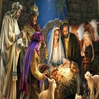
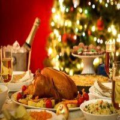

PAPAI NOEL
O Papai Noel teve origem em São Nicolau, um bispo católico do século IV que viveu na cidade de Mira, onde atualmente é a Turquia. Ele é lembrado como um homem bondoso que presenteava as crianças no dia de seu aniversário, 6 de dezembro. Com o passar do tempo e as variações em torno da lenda, a data acabou mudando para o 25 de dezembro.
PRESÉPIO
Você sabia que o primeiro presépio foi montado por São Francisco de Assis? Sim, foi no século XIII, na Itália, que São Francisco quis recriar a cena do nascimento de Jesus para explicar para o povo como teria acontecido. Depois, cada vez mais a montagem do presépio tornou-se uma tradição forte e passou a ser montado nas casas, nas igrejas e em diversos locais durante o ciclo do Natal. O presépio simboliza a união do divino com o terreno, afinal reúne pessoas, animais e a figura de Deus. Ainda no campo religioso, os bonitos anjos usados na decoração do Natal remetem a São Gabriel, o anjo que terá anunciado à Maria que ela seria mãe de Jesus. Os três reis magos são os magos que foram à procura de Jesus para adorá-lo e levar-lhe presentes. Aí está mais uma fator religioso ao lado do costume de dar presentes no Natal, o que faz aumentar o furor do comércio nessa altura do ano. E as estrelas nos topos das árvores de Natal são justamente o sinal seguido pelos reis magos para encontrar o lugar onde Jesus tinha nascido.
CEIA DE NATAL
A sua origem vem da Europa, onde as pessoas costumavam deixar a porta das suas casas abertas para receber viajantes. Ela simboliza a união e a confraternização das famílias. Assim, na véspera de Natal, os familiares se reúnem à mesa para a tradicional ceia de Natal. Na cultura brasileira é comum ter o peru de Natal, as frutas secas e o panetone.